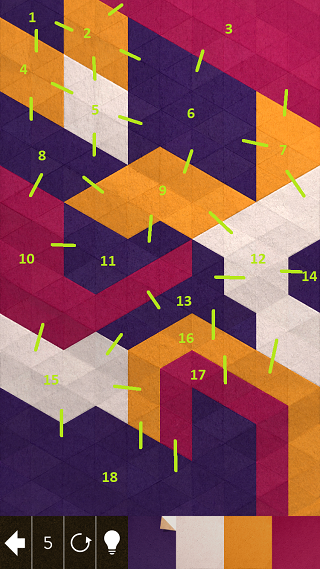
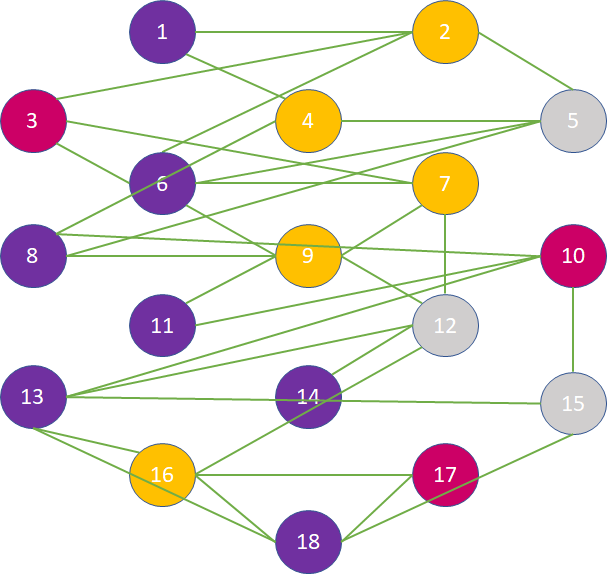

Kami 2
Kami 2 is an iOS game where the player folds colored paper with the goal of making the whole screen have the same color. Each level has a set of colors and the player can pick any of them, color a section, then repeat for a limited number of steps:

Some levels are fairly tricky. For example I got stuck on this one:
While the app can provide hints, a more interesting exercise is to see if we can solve this with an algorithm. We can look at this as a graph problem. Each colored section represents a node in the graph and we consider adjacent areas as connected by edges:

Here is a more abstract representation of the same level:

The only information we care about is the color of each node and what other nodes it is connected with.
A step in the game consists of choosing a color, picking a node to get colored with the chosen colore, then merging the colored node with adjacent nodes of the same (new) color. The game is won if the nodes get merged down to a single node within the step limit.
A Python representation of the graph would look like this:
class Graph:
def __init__(self, nodes=dict(), edges=[]):
self.nodes = nodes
self.edges = edges
We represent nodes as a dictionary where the key is the node id and the value is the color of the node, and edge as a list of pairs of ids. The level diagramed above would be represented as:
g = Graph(
nodes = {
1: "Purple",
2: "Yellow",
3: "Red",
4: "Yellow",
5: "White",
6: "Purple",
7: "Yellow",
8: "Purple",
9: "Yellow",
10: "Red",
11: "Purple",
12: "White",
13: "Purple",
14: "Purple",
15: "White",
16: "Yellow",
17: "Red",
18: "Purple",
},
edges = [
(1, 2),
(1, 4),
(2, 3),
(2, 5),
(2, 6),
(3, 6),
(3, 7),
(4, 5),
(4, 8),
(5, 6),
(5, 8),
(6, 7),
(6, 9),
(7, 9),
(7, 12),
(8, 9),
(8, 10),
(9, 11),
(9, 12),
(10, 11),
(10, 13),
(10, 15),
(12, 13),
(12, 14),
(12, 16),
(13, 15),
(13, 16),
(13, 18),
(15, 18),
(16, 17),
(16, 18),
(17, 18),
])
We need a function that, for a given node id, enumerates all the connected nodes. This is a member function of the graph:
def connected(self, node):
for edge in self.edges:
if edge[0] == node:
yield edge[1]
elif edge[1] == node:
yield edge[0]
We also need a function that colors a node and merges it with adjacent nodes of the same color. We can make this function return a new graph instance with the applied updates. Its signature would be:
def color(self, node, color):
First it would have to determine the set of nodes that need to be merged after coloring. That is the node that just got colored and adjacent nodes which have the same color as its new color. By convention, when we merge nodes we keep the smallest id:
to_merge = [node]
to_merge += [n for n in self.connected(node) if self.nodes[n] == color]
new_n = min(to_merge)
The nodes of the new graph would be the same nodes as the old one, minus
any node in to_merge. Nodes in the to_merge list would be
represented by the node new_n:
new_nodes = { new_n: color }
for node in self.nodes:
if node not in to_merge:
new_nodes[node] = self.nodes[node]
We also need to build the new list of edges. We do this as follows: for
each edge, if both nodes are in to_merge, the edge does not exist in
the new graph so we discard it. If one node is in to_merge, we create
a new edge where the node in to_merge is replaced by new_n. If none
of the nodes is in to_merge, we keeep the edge:
new_edges = set()
for edge in self.edges:
if edge[0] in to_merge and edge[1] in to_merge:
continue
elif edge[0] in to_merge:
new_edges.add(tuple(sorted((new_n, edge[1]))))
elif edge[1] in to_merge:
new_edges.add(tuple(sorted((edge[0], new_n))))
else:
new_edges.add(edge)
We keep the edge tuples sorted by node id to avoid duplication (for
example having both a (1, 3) and a (3, 1)). We return a graph
consiting of new_nodes and new_edges. The full implementation of
color is:
def color(self, node, color):
to_merge = [node]
to_merge += [n for n in self.connected(node) if self.nodes[n] == color]
new_n = min(to_merge)
new_nodes = { new_n: color }
for node in self.nodes:
if node not in to_merge:
new_nodes[node] = self.nodes[node]
new_edges = set()
for edge in self.edges:
if edge[0] in to_merge and edge[1] in to_merge:
continue
elif edge[0] in to_merge:
new_edges.add(tuple(sorted((new_n, edge[1]))))
elif edge[1] in to_merge:
new_edges.add(tuple(sorted((edge[0], new_n))))
else:
new_edges.add(edge)
return Graph(new_nodes, new_edges)
To solve a level we try coloring all of the nodes then recursively solve for the new graph. If our graph has one node, we found a solution. If we run out of steps, our candidate solution is not good so we backtrack:
def solve(graph, steps, n):
if len(graph.nodes) == 1:
print(steps)
exit()
if n == 0:
return
for node in graph.nodes:
colors = list(set([graph.nodes[n] for n in graph.connected(node)]))
for color in colors:
g = graph.color(node, color)
solve(g, steps + [(node, color)], n - 1)
Here graph is the graph we are trying to solve, steps is the list of
actions in our solution, consisting of pairs of node id and color, and
n is the remaining number of steps.
Note that we don't attempt to color a node with any random color, rather we want to color it with the color of one of its adjacent nodes. The reason for this is that such a coloring guarantees some nodes will get merged so we reduce the total number of nodes with this step. If we were to color a node with a color none of its adjacent nodes has, there would be nothing to merge so we would waste a step without reducing the graph.
This solution works but is rather slow. One optimization we can do is to more aggressively prune our search space: if at any point our graph has more colors than the number of remaining steps + 1, we know we are down the wrong path and need to backtrack. As an example, if we have four colors on the board: blue, red, yellow, white, but we only have 2 steps left, no matter how the areas are connected, we can never end up with a single color in 2 steps as we need to recolor 3 areas.
We can implement this optimization by updating the Graph constructor
to keep track of the number of unique colors and update our solve
function to backtrack if we have more colors than steps + 1:
class Graph:
def __init__(self, nodes=dict(), edges=[]):
self.nodes = nodes
self.edges = edges
self.colors = len(set(nodes.values()))
The update is the last line, which maintains the count of unique values
in the nodes dictionary. Updated solve looks like this:
def solve(graph, steps, n):
if len(graph.nodes) == 1:
print(steps)
exit()
if n == 0:
return
if graph.colors > n + 1:
return
for node in graph.nodes:
colors = list(set([graph.nodes[n] for n in graph.connected(node)]))
for color in colors:
g = graph.color(node, color)
solve(g, steps + [(node, color)], n - 1)
We introduced a new if statement that returns if
graph.colors > n + 1.
Running this yields the following solution for the level:
[(10, 'Purple'), (8, 'White'), (5, 'Yellow'), (2, 'Purple'), (1, 'Red')]
So coloring node 10 with purple, then node 8 with white and so on solves the level.
Another potential optimization which I did not implement could improve pruning further by relying on the fact that coloring a node and merging it with adjacent nodes removes at most two edges from a path. So if the shortest path between two nodes in the graph is longer than twice the number of remaining steps, we would again not be able to find a solution from the current state.
The full source code is available on GitHub.